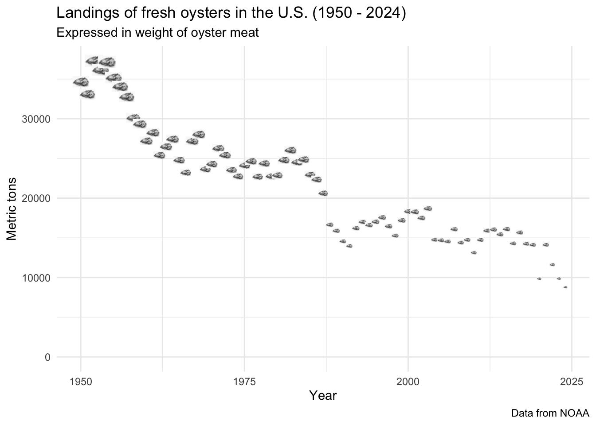
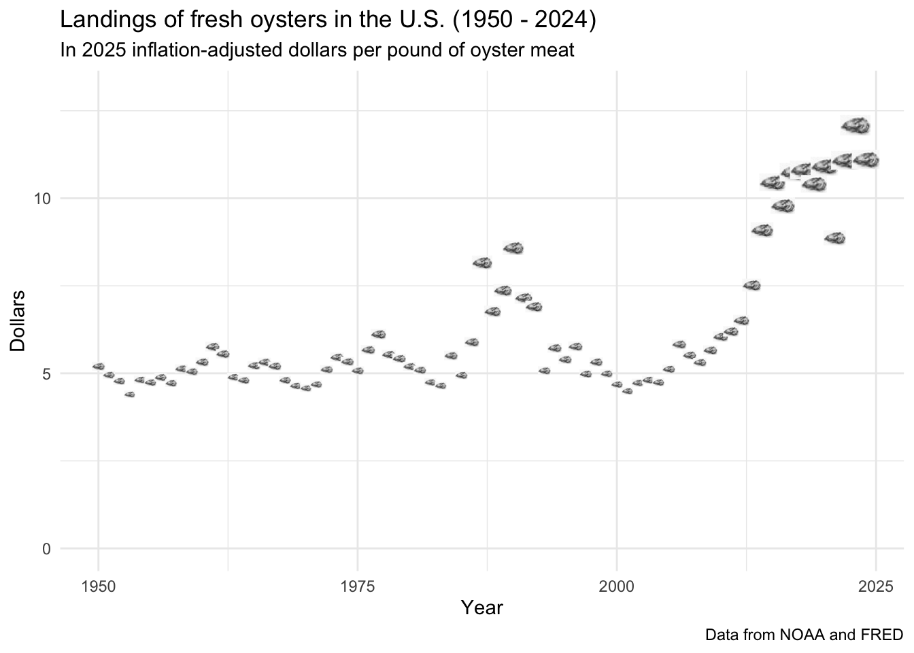

Rosenstiel School of Marine, Atmospheric, and Earth Science, Univertsity of Miami
Published
November 27, 2025
Introduction
This repository contains data and code to build a dataset of landings of fresh oysters from 1950 to 2024, inclusive, calculates weighed-average inflation-adjusted prices, and breaks out data for the top five producing states. It includes and aggregates all reported oyster species in NOAA records.
Objectives
It is intended to support decision-making in the oyster production and distribution sectors by displaying trends in volumes and prices.
Data Sources
The data for oyster landings volumes and historical prices comes from NOAA. The data to calculate the adjustments for inflation comes from the St. Louis Fed (FRED).
Data Processing
The file from NOAA contains 1,767 yearly observations (rows) and 11 columns (year + 10 variables). Some of the data is redundant (common and scientific names, and tsn), adds imprecision (metric tons and lbs), or is irrelevant for the purposes of this analysis (collection, confidentiality, source).
The file from FRED contains 908 monthly observations (rows) and two columns (date and CPI value).
Initial processing included cleaning up file names, filtering, grouping and/or summarizing, and exporting the data.
Further processing included plotting data and a spatial visualization.
Main Findings
Volumes
Oyster landings in the U.S. have declined from a maximum of 82.2 million pounds in 1952 to 19.4 million pounds in 2024.
```{r}#| label: fig-landingsvol#| fig-cap: "Trend in U.S. oyster landings"#| warning: false#| code-fold: true#| code-summary: "Show code"library(tidyverse)library(ggridges)library(readr)library(ggplot2)library(dplyr)library(ggimage)library(magick)library(here)landings <-read_rds("data/output/landings_inflation_adjusted.rds")# create data frame combining landings and oyster imagealandings$img <-rep("data/processed/oyster_resized.png", nrow(landings))# plotggplot(data = landings,mapping =aes(x = year,y = total_pounds/2204)) +geom_image(aes(image = img), size = landings$total_pounds/1500000000) +labs(title ="Landings of fresh oysters in the U.S. (1950 - 2024)",subtitle ="Expressed in weight of oyster meat",x ="Year",y ="Metric tons",caption ="Data from NOAA") +scale_y_continuous(limits =c(0, max(landings$total_pounds/2204))) +theme(caption.justification ="right",legend.position ="bottom",legend.justification ="center") +scale_color_hue(labels =c("Landings", "Imports")) +theme_minimal()```

Figure 1: Trend in U.S. oyster landings
Inflation-adjusted price of oyster meat
For many decades and most of the time period studied, the inflation-adjusted price of oyster meat fluctuated between $5.00 and $7.50. In 2013, the price began to rise significantly from this previous range and reached a high of $12.10 in 2023.
```{r}#| label: fig-landingsprice#| fig-cap: "Trend in U.S. oyster meat price"#| warning: false#| code-fold: true#| code-summary: "Show code"# plotggplot(data = landings,mapping =aes(x = year,y = adj_dollars)) +geom_image(aes(image = img), size = landings$adj_dollars/200) +labs(title ="Landings of fresh oysters in the U.S. (1950 - 2024)",subtitle ="In 2025 inflation-adjusted dollars per pound of oyster meat",x ="Year",y ="Dollars",caption ="Data from NOAA and FRED") +scale_y_continuous(limits =c(0, 13)) +theme(caption.justification ="right",legend.position ="bottom",legend.justification ="center") +theme_minimal()```

Figure 2: Trend in U.S. oyster meat price
Top five producing U.S. states
From 1950 through 2024, the top five oyster producing states, as measured by inflation-adjusted value of the landings, were (in descending order): Louisiana, Maryland, Virginia, Washington, and Texas. The most consistent producers over this time period were Washington and Louisiana. Texas, Virginia, and Maryland all had gaps with no reported production.
```{r}#| label: fig-topfive#| fig-cap: "Top five U.S. states"#| warning: false#| code-fold: true#| code-summary: "Show code"# load datatop_states <-read_rds("data/output/landings_by_top_state_inflation_adjusted.rds")## define states as factorstop_states <- top_states |>mutate(state =factor(state,levels =c("Other", # bottom"Louisiana","Maryland","Virginia","Washington","Texas"))) # top# plotggplot(data = top_states,mapping =aes(x = year,y = state,height = adj_dollars /1e6,fill = state)) +geom_density_ridges(stat ="identity", scale =0.95,alpha =0.99,color ="white") +scale_fill_manual(values =c("gray25", "gray25", "gray25","gray25", "gray25", "gray25")) +labs(title ="Value of oyster production top five U.S. states (1950 - 2024)",subtitle ="In inflation-adjusted 2025 dollars",x ="Year",y =NULL,caption ="Data from NOAA and FRED") +theme_ridges(grid =FALSE,font_size =13) +theme_minimal() +theme(legend.position ="none",plot.title =element_text(face ="bold"))```
Figure 3: Top five U.S. states
A nice map
This map of the 48 contiguous united states highlights the importance of Louisiana, Maryland, Virginia, Washington, and Texas to U.S. oyster production.
References
The landings data [FOSS_landings.xlsx] was obtained from https://www.fisheries.noaa.gov/foss/f?p=215:200:7482903932446
The inflation data [CPIAUCSL.csv] was obtained from https://fred.stlouisfed.org/series/CPIAUCSL